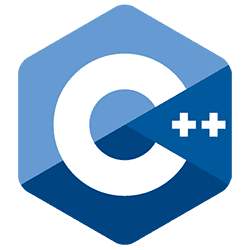
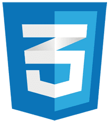

Minha história, em poucas palavras

Meu nome é Anderson, hoje em é o ano do meu º aniversário, iniciei na área de tecnologia desde 2003 principalmente em manutenção de hardware, sempre engajado em aprender e me atualizar com as novas tecnologias do mercado. Iniciei meu aprendizado na área de desenvolvimento com Clipper, depois Visual Basic e Delphi, neste último trabalhei por 10 anos como dev.
No dia em que escrevi esse texto sobre mim estive engajado em aprender mais sobre as linguagens de programação web e mobile, dividindo meu tempo entre um trabalho como fotógrafo, suporte e dev, ingressei também na Faculdade de Tecnologia de Jaú, Fatec Jahu, para me aprimorar e alçar novos voos na área de desenvolvimento.
Toda essa jornada começou quando senti a necessidade de ferramentas que não estavam disponíveis ou que não atendiam completamente minhas necessidades e que me levou ao meu primeiro curso na área da programação.
 